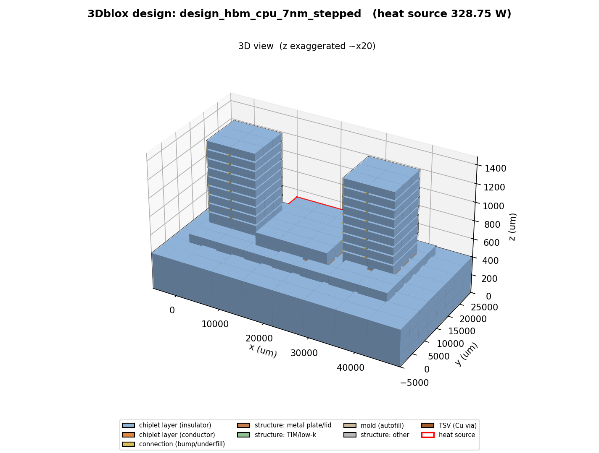
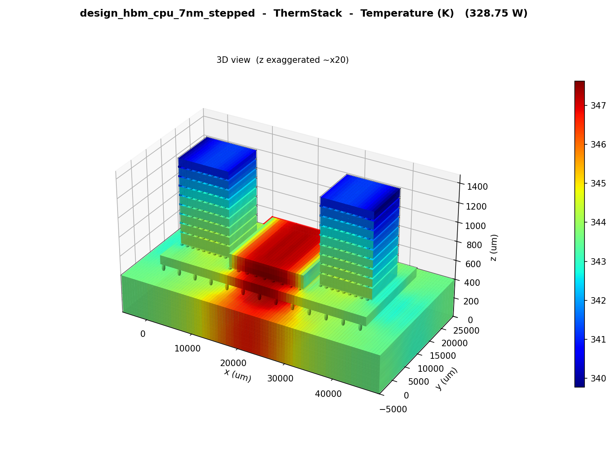
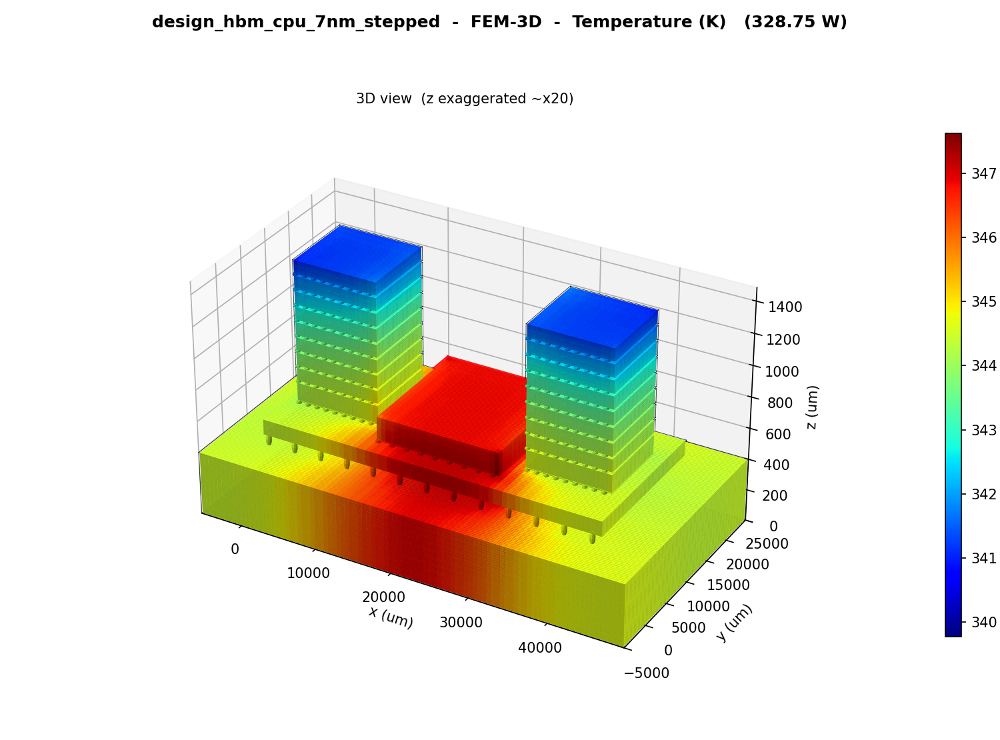
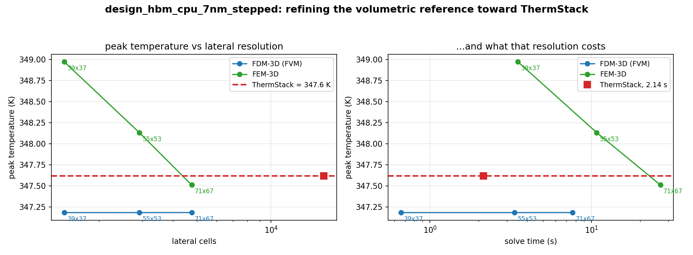
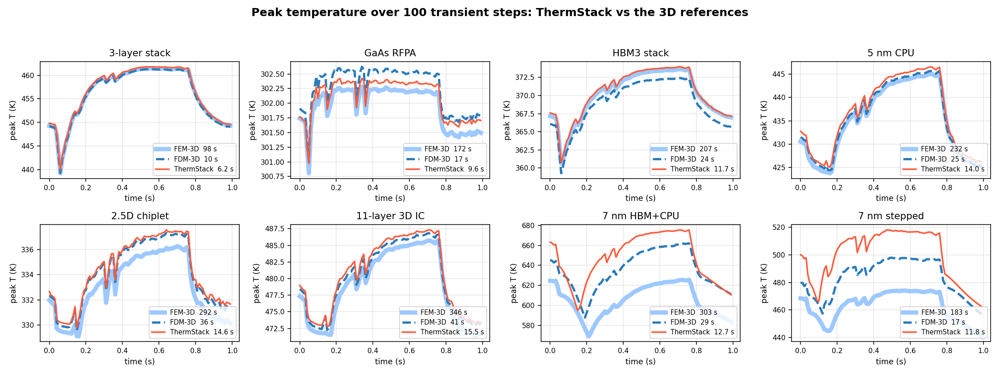

ThermStack (ChipletTherm) solves 2.5D and 3D heterogeneous-integration stacks on their real IEEE 3Dblox geometry — every die, bond line, interposer and stepped lid — and returns the full 3D temperature field in about a second, where the 3D finite-volume and finite-element references need minutes. It's a true hybrid: a fast spectral numerical engine for sign-off-grade accuracy, plus AI-accelerated neural solvers — physics-informed and transformer-based — for parametric design-space sweeps and live thermal estimation.
Vertical stacking of dies, interposers, and memory turns thermal behavior into a first-order design constraint — and with accelerators now pushing 700–1200 W, the tools accurate enough to trust are far too slow to keep in the loop.
Heterogeneous 2.5D/3D stacks raise thermal resistance and trap heat between layers. Logic chiplets next to stacked HBM create localized hotspots — and peak junction temperature decides whether a design ships.
A full 3D finite-element solve discretizes the whole volume into millions of unknowns. That's fine for one sign-off, but impossible for the thousands of evaluations a design-space search — or a runtime control loop — demands.
Floorplanning, power delivery, packaging co-design, and runtime management all need temperature feedback per iteration. Without a fast, accurate model, thermal gets checked last — when it's most expensive to fix.
ThermStack combines fast spectral numerical solvers, AI-accelerated neural solvers, and a full 3D-FEM reference in one engine — covering steady-state sign-off, time-dependent response, parametric design-space exploration, and real-time thermal estimation on the very same chiplet model.
Full-chip, full-stack temperature fields for 2.5D and 3D assemblies — every die, layer, and interposer resolved through-thickness in 3D from a single power and floorplan description.
Drive the model with arbitrary power waveforms and get the full temperature history at every node — thermal transients, throttling, and workload bursts, step by step.
A full 3D steady-state field lands in 1.9 s on average — up to 182× faster than the 3D-FEM reference and 83× faster than 3D finite volume, at the resolution those references would need to match it.
ThermStack lands within 0.004 K of a consistent-mass 3D-FEM reference on the 6 conventional benchmark packages — where the 3D finite-volume solver itself is 0.57 K away — and 0.509 K averaged over all 8, the two dense 7 nm packages included.
Validated to 11 layers — 2.5D interposers, 3D logic stacks, HBM, 7 nm HBM+CPU packages, CPU and RF assemblies — including non-coplanar stepped tops, with per-layer anisotropic materials, in-plane material variation, interface thermal resistance, heat capacity, and convective surface cooling.
The solve is a single structured direct pass with no iteration and no convergence tuning, so runtime is predictable and the engine batches naturally across multi-core CPUs and GPUs — built to evaluate thousands of candidate designs or stream live temperature estimates.
ThermStack accepts the IEEE 3Dblox format — the IEEE-standard modular description language for defining physical stacking, dimensions, and logical connectivity in 2.5D and 3D-IC designs — so your existing stack descriptions drop straight into the thermal flow.
ThermStack-AI (PINN) trains on the heat equation itself — no simulation database — and one trained model covers a whole (ambient, cooling) design space: 0.59 ms per full-chip map, 113× faster Monte-Carlo uncertainty quantification than commercial FEM, with nonlinear temperature-dependent conductivity and leakage built in.
ThermStack-AI (TNN), a GPT-style transformer, turns 100 frames of on-chip performance counters into the full-chip transient thermal image — no power map, no floorplan. 0.36 K average RMSE against infrared measurement on a commercial 8-core CPU, at 14 ms per inference.
ThermStack is designed to plug directly into agentic EDA workflows. A first-class CLI and structured data interface let autonomous design agents invoke fast static or transient thermal analysis, consume machine-readable temperature maps and margins, and feed those results back into floorplanning, stack planning, power budgeting, and optimization loops.
Thermal analysis becomes a callable step inside your agentic EDA flow, not a hand-run GUI task.
ThermStack is built on two complementary solver families that share the same spectral DNA. The numerical engine represents the in-plane temperature field in a compact spectral (cosine) basis, resolves it down through the design's real layer structure, and reassembles the full 3D map — keeping the in-plane material detail that layer-averaged models have to throw away. The AI-accelerated family builds on that same foundation: ThermStack-AI (PINN) is a physics-informed neural network that learns the cosine-mode coefficients directly from the heat equation — no training database — and amortizes a whole parametric design space into one model, while ThermStack-AI (TNN) is a transformer (foundation-model architecture) that estimates full-chip transient thermal maps in real time straight from runtime telemetry. ThermPINN / ThermTransformer are the names used in our papers and figures.
The in-plane temperature pattern is represented in a compact basis of smooth, wave-like spatial modes rather than on a volume mesh. A few hundred modes carry the whole field, so the size of the problem is set by the basis — not by how many cells the geometry needs.
The stack is taken as the design actually describes it — every die, bond line, TSV field, interposer, mold and lid, including non-coplanar stepped tops — with per-layer anisotropic materials, interface resistances, and the in-plane material variation kept intact instead of averaged into one number per layer.
The whole stack is resolved in a single direct pass with no iteration and no convergence tuning, on dense arithmetic that maps straight onto multi-core CPU and GPU hardware. Runtime is predictable and repeatable — the same design always costs the same.
The solved modes recombine into the complete 3D temperature field on the design's own geometry — the steady-state map directly, or advanced step by step through time for transient analysis.
Geometry-resolved: the full 3D field on the design's real 3Dblox structure, with in-plane material variation and stepped tops handled directly. This is the solver every number on this page was produced with.
A 3D finite-volume and a consistent-mass 3D finite-element solver ship alongside as ground truth. Every ThermStack result is checked against them at several lateral resolutions, on the same geometry.
Physics-informed neural network over the same cosine-mode basis — trained by the heat equation alone, exactly satisfying the boundary conditions. One model spans a whole (ambient, cooling) parameter space, including nonlinear temperature-dependent conductivity and leakage.
Decoder-only transformer (GPT-style foundation-model architecture): 100 frames of performance-counter telemetry in, the full-chip transient thermal image out — no power map, no floorplan, validated against infrared measurement.
A 3D FEM or FVM solver has to mesh the volume, so its cost is tied to how finely the geometry is resolved: doubling the lateral resolution multiplies the work several-fold, and the packages that most need resolving — fine 7 nm floorplans, concentrated hotspots, stepped stacks — are exactly the ones that make it unaffordable. ThermStack's cost is set by the size of its spectral basis instead, so the geometry can be resolved at 128×128 while the solve itself stays the same size. Matching that fidelity with the references costs 31×–68× more time, on average, for the same answer.
A 3D finite-volume and a full 3D finite-element solver ship alongside as ground-truth references. The numerical engine is validated against both, at several lateral resolutions; the AI solvers are validated against commercial FEM and direct infrared thermal measurement.
Every number below was produced by the runs in thermstack_io_results/, benchmarked against hard references. Numerical engine: a 3D finite-volume (FVM) and a consistent-mass 3D finite-element (FEM) solver, both run on the identical IEEE 3Dblox geometry at three lateral resolutions (31×31–41×39 to 63×63–73×69), across 8 real packages from a 3-layer stack to an 11-layer 3D IC and two 7 nm HBM+CPU assemblies — one of them with a non-coplanar stepped top. AI solvers: commercial FEM (COMSOL) ground truth for ThermStack-AI (PINN), and direct infrared thermal-camera measurement of a live 8-core CPU for ThermStack-AI (TNN).
| Method | Lateral grid | RMSE vs FEM-3D | Runtime |
|---|---|---|---|
| FEM-3D reference | 63×63–73×69 | — | 153.1 s |
| FEM-3D | 31×31–41×39 | 0.305 K | 10.3 s |
| FDM-3D finite volume | 63×63–73×69 | 0.492 K | 71.9 s |
| FDM-3D finite volume | 31×31–41×39 | 0.778 K | 2.85 s |
| ThermStack | 128×128 | 0.509 K | 1.93 s |
| Solver | Grid | Cells | Peak T | Solve time |
|---|---|---|---|---|
| FDM-3D finite volume | 39×37×115 | 165,945 | 347.2 K | 0.661 s |
| FDM-3D finite volume | 55×53×115 | 335,225 | 347.2 K | 3.34 s |
| FDM-3D finite volume | 71×67×115 | 547,055 | 347.2 K | 7.63 s |
| FEM-3D | 39×37×115 | 165,945 | 349.0 K | 3.51 s |
| FEM-3D | 55×53×115 | 335,225 | 348.1 K | 10.8 s |
| FEM-3D | 71×67×115 | 547,055 | 347.5 K | 26.8 s |
| ThermStack | 128×128×115 | 1,884,160 | 347.6 K | 2.14 s |




| Package | RMSE vs FEM-3D | RMSE vs FDM-3D | Peak Δ vs FEM-3D | FEM ↔ FDM peak Δ |
|---|---|---|---|---|
| 11-layer 3D IC | 0.233 K | 0.476 K | 1.53 K | 1.04 K |
| 2.5D chiplet | 0.162 K | 0.143 K | 1.29 K | 1.04 K |
| HBM3 stack | 0.071 K | 1.478 K | 0.31 K | 1.24 K |
| 5 nm CPU | 0.298 K | 0.785 K | 1.50 K | 0.61 K |
| GaAs RFPA | 0.019 K | 0.060 K | 0.14 K | 0.34 K |
| 3-layer stack | 0.129 K | 0.626 K | 0.31 K | 0.20 K |
| 7 nm HBM+CPU | 5.713 K | 5.976 K | 49.92 K | 36.50 K |
| 7 nm stepped | 4.386 K | 2.953 K | 43.96 K | 23.82 K |
| All 8 packages | 1.376 K | 1.562 K | — | — |

| Method | Mean error | Per map |
|---|---|---|
| COMSOL FEM reference | — | 5 s |
| VarSim analytical baseline | 0.61 K | 1.3 ms |
| Plain PINN 150× slower to train | 0.05 K | 1.04 ms |
| ThermStack-AI (PINN) | 0.23 K | 0.59 ms |
| Method | Avg RMSE | Max RMSE | Per map |
|---|---|---|---|
| LSTM RealMaps | 2.19 K | 19.8 K | 19 ms |
| GAN ThermGAN | 0.60 K | 10.9 K | 16 ms |
| ThermStack-AI (TNN) | 0.36 K | 2.78 K | 14 ms |
ThermStack is in active development. Request a demo or a walkthrough on your own 2.5D/3D chiplet designs, and we'll get you set up.